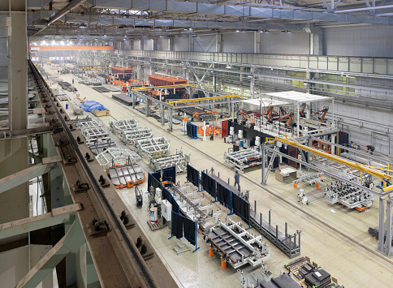
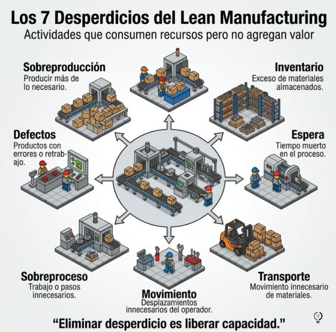
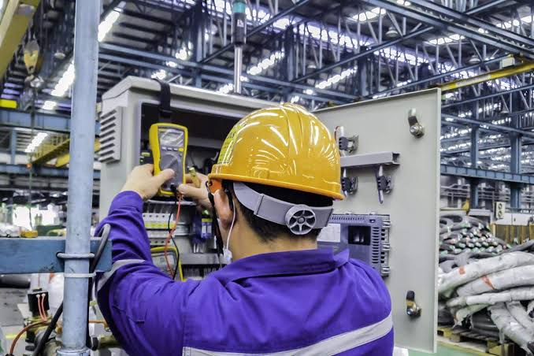

Bienvenidos a Industria Eficiente
La gestion eficiente de los procesos industriales permite aprovechar mejor los recursos, cumplir los pedidos a tiempo y fabricar productos que satisfagan las necesidades de los clientes. Para lograrlo, las empresas necesitan planificar sus operaciones, controlar la calidad y evaluar sus resultados.
En una empresa dedicada a fabricar productos plasticos, los retrasos, las perdidas de materia prima, los defectos, las averias y los errores de inventario pueden aumentar los costos de produccion. Este portal presenta herramientas de Ingenieria Industrial que ayudan a identificar las causas de estos problemas y proponer soluciones practicas.

Conoce las areas de la Ingenieria Industrial
1. Gestion de la produccion
Organiza las ordenes de trabajo, los materiales, el personal y la capacidad de las maquinas para cumplir los pedidos.
Conocer gestion de la produccion
2. Gestion y control de calidad
Permite detectar defectos, verificar especificaciones y establecer acciones para evitar errores repetitivos.
3. Logistica e inventarios
Administra las materias primas y los productos para que esten disponibles en la cantidad y el momento necesarios.
Conocer logistica e inventarios
4. Lean Manufacturing

Busca eliminar actividades que consumen recursos sin aportar valor al producto o al cliente.
5. Mantenimiento industrial

Ayuda a reducir las averias y conservar los equipos en condiciones adecuadas de funcionamiento.
Conocer mantenimiento industrial
6. Productividad e indicadores
Utiliza datos e indicadores para evaluar el desempeño e identificar oportunidades de mejora.